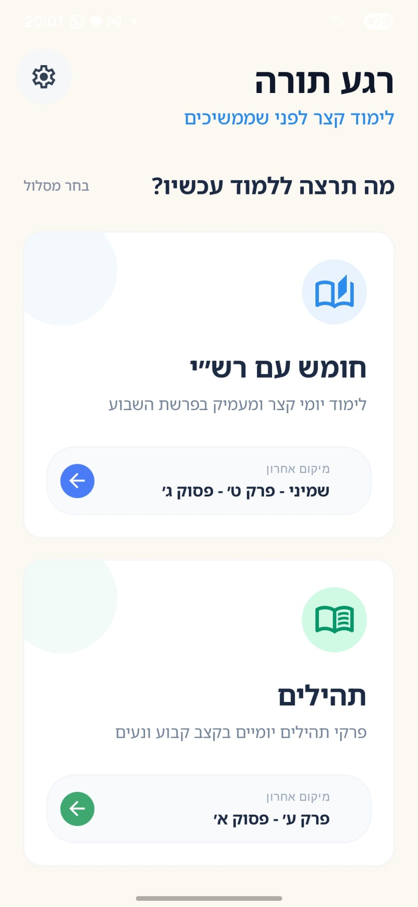
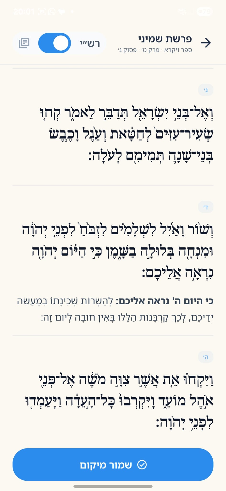
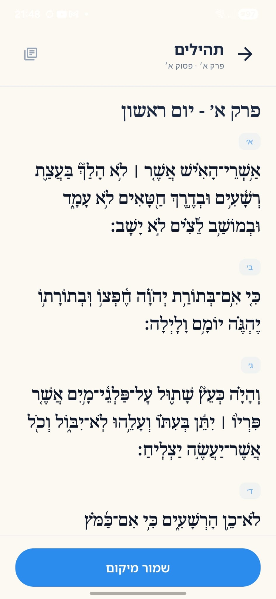

מה האפליקציה מנסה להשיג
- לעזור ליצור קביעות בלימוד תורה בתוך שגרת היום.
- להציג תזכורת קצרה כשנפתחת אפליקציה שנבחרה מראש.
- לאפשר חזרה מהירה לנקודת הלימוד האחרונה בלי להתחיל מחדש.
זהו דף מידע תמציתי עבור בדיקות, לא דף שיווקי. המטרה היא להסביר מה האפליקציה מנסה לעשות, מה כבר עובד היום, מה עוד דורש בדיקה, ואיך אפשר להעביר משוב או תקלות.
הרעיון המרכזי הוא לא להילחם בשימוש בטלפון אלא להפוך רגעי הסחת דעת להזדמנויות קטנות ללימוד קבוע.
כאן מרוכזת תמונת מצב קצרה של מה שכבר קיים באפליקציה ומה עדיין דורש בדיקה ממוקדת.
מסכים עיקריים שממחישים איפה פוגשים את הזרימה המרכזית של האפליקציה.

נקודת הכניסה למסלולי הלימוד ולמעבר להגדרות.

קריאה רציפה, ניווט, ושמירת מיקום ללימוד הבא.

תצוגת לימוד נוספת שממחישה את האופי השקט והקריא של המסך.
סיכום קצר של השינויים האחרונים, כדי שבודקים ידעו במה להתמקד בכל סבב בדיקה.
נוספה אפשרות לוגים ושליחתם מדף פיתוח, עודכנה הגרסה, ובוצעו ליטושים במסך הבית ובהצגת הזרימה.
נוספו הסכמה לפרטיות, טיפול בפרשות מחוברות, סימון יומי בתהילים ועליות בחומש, ותיקוני קפיצות טקסט.
נכנסו תמיכת תהילים, שמירת מיקום לפי מסלול, בדיקות יחידה ובדיקות ויזואליות, ועיצוב ההתראות והמעקב.
אם זיהיתם תקלה, התנהגות לא צפויה, או נקודת חיכוך, עדיף לשלוח תיאור קצר עם המכשיר, גרסת האנדרואיד, ומה בדיוק קרה.
המקום הזה מוכן לקישור ישיר ל־Google Form עבור משוב מסודר מהבודקים.